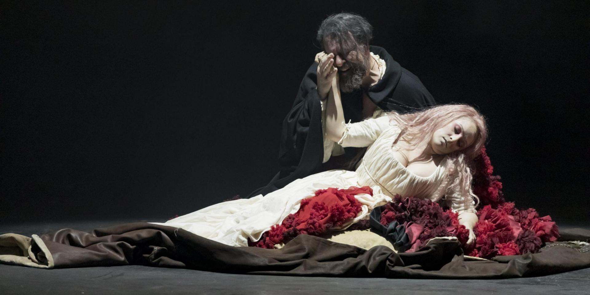

Rigoletto es una Ópera Buffa italiana con libreto de Francesco Maria Piave. Está basada en la obra teatral de Victor Hugo “Le Roi S’Amuse” (1832). Fue estrenada el 11 de marzo de 1851 en el teatro La Fenice, en la ciudad de Venecia.
Inicialmente titulada "La Maldición", tuvo que cambiar su nombre a causa de la censura por parte de las autoridades austriacas, debido a la fuerte critica social y politica que propone, sumado a la fama de Verdi por exaltar los ánimos patrióticos. "El libretista Piave tiene que modificar la acción, trasladandola a Italia y haciendo de Francisco I de Francia un libertino duque de Mantua" (A. Tarazona, 1975, p.37).
El realismo como corriente estética del arte moderno tiende a representar la verdad más que a la belleza. Victor Hugo entiende que “la belleza es única y la fealdad múltiple” y en la profusión de esa multiplicidad se conforma la realidad. La tarea artística de representar la realidad en toda la riqueza de sus determinaciones impone la necesidad de dar cuenta de lo negativo. El imperativo del arte realista decimonónico es representar la naturaleza humana en todo su despliegue, lo que exige hacer justicia con lo feo, lo sombrío, lo deforme. La representación de lo feo adquiere así su particular interés en virtud de su capacidad de transfiguración.
“La configuración de lo grotesco constituye la tentativa de proscribir y conjurar lo demoníaco en el mundo.” (Oyarzun, 2016, p. 113)
La música va a jugar un rol muy importante en la construcción de la performance y en la configuración de la estética de lo grotesco, pero siempre de la mano de la acción dramática, con sus características y personajes.
Acto III – N° 13: Duetto – Scena, Terzetto e Tempesta (Gilda, Maddalena e Sparafucille).
Acto I – N° 3: Duetto – Rigoletto e Sparafucille.
Detrás de estos momentos de discordancia, antagonismo y dualidad, creemos que hay un afán de disponer los elementos de manera equilibrada. Esto significa atender a que haya, en mayor o menor medida, una jerarquía semejante entre los elementos que responden a una categoría u otra. De esta manera se procura una representación lo más fiel posible a la realidad, con sus matices, complejidades y desgracias.
